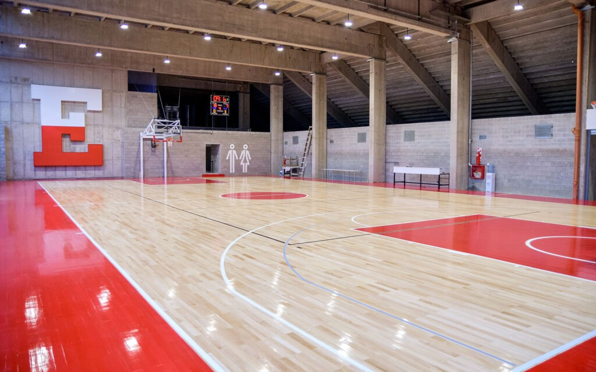

Introducción
El presente manual no tiene como finalidad presentar una receta con ejercicios para la preparación física, sino que tiene como propósito máximo alinear un número de conceptos, ideas y procedimientos que atreviese a todos los deportistas de las divisiones menores del básquet del club Estudiantes de La Plata para la formación profesional.
El objetivo máximo del manual es que el profesor, a través de las herramientas que tenga a su disponibilidad, pueda establecer un lineamiento que no le sea ajeno a los jugadores menores como mayores. Hacer que los pasajes de estos en las distintas categorías no sean de continuos aprendizajes de nuevos métodos, sino que ya conozcan la lógica, permitiendo potenciar su desempeño y adquisición de hábitos desde la misma preparación física.
Pretendemos transmitirle al deportista, a través del área de la preparación física, buenos hábitos: respeto, compañerismo y educación, la importancia de los cuidados previos y post entrenamiento tanto de básquet como físico y lo vital que representa hacer físico para tener un cuerpo fuerte y sano.
La enseñanza de los buenos hábitos la vamos a potenciar con charlas de profesionales idóneos en las distintas disciplinas: kinesiología, nutrición, psicología, educación y respeto.
Como profesores de la preparación física tenemos que enseñarles/crearles una cultura/hábito del trabajo físico, transmitirles que siempre se entrena físico, tanto en cancha como en el gimnasio, no importa si estoy lesionado, SIEMPRE SE ENTRENA, siempre se asiste al entrenamiento físico.
Buscaremos transmitir la importancia de llevar adelante la preparación física no solo para potenciar el rendimiento basquetbolístico, sino también -y muy importante- para prevenir futuras lesiones, hecho que se puede evitar si trabajamos a conciencia la parte física.